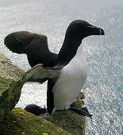
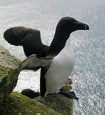

| Razorbill | |
|---|---|
|  | |
| At Westfjords peninsula, Iceland | |
| Conservation status | |
| Binomial name | |
| Alca torda Linnaeus, 1758 |
| Razorbill | |
|---|---|
|  | |
| At Westfjords peninsula, Iceland | |
| Conservation status | |
| Binomial name | |
| Alca torda Linnaeus, 1758 |
The Razorbill, Alca torda, is a large auk, 38–43 cm in length, with a 60–69 cm wingspan. It is the only living member of the genus Alca.
Adult birds are black on their upperparts and white on the breast and belly. The thick black bill has a blunt end. The tail is pointed and longer than that of a Murre. In winter, the throat and upper chest turn white.
Their breeding habitat is islands, rocky shores and cliffs on northern Atlantic coasts, in eastern North America as far south as Maine, and in western Europe from northwestern Russia to northern France. North American birds migrate offshore and south, ranging from the Grand Banks of Newfoundland to New England. Eurasian birds also winter at sea, with some moving south as far as the western Mediterranean.
These birds forage for food by swimming underwater. Razorbills can stay underwater for about one minute before surfacing. Razorbills catch their prey and eat them underwater. They mainly eat fish, like sandeels, herring and capelin, also some crustaceans and marine worms. Razorbills usually nest in large colonies and lay their eggs on bare rock or ground. Each partner will forage, then come home to take over with caring for the egg or young. When feeding their young, they will hold several fish in their bill and fly back to the nesting cliff. They may well fly more than 100 km out to sea to feed when during egg incubation, but when provisioning the young, they forage closer to the nesting grounds, some dozen kilometers away, and often in shallower water.[2]
Though the Razorbill's average lifespan is roughly 13 years, a bird ringed in the UK in 1967 has survived for at least 41 years—a record for the species.[3]
Razorbill colonies include:

{kind=link}
{kind=link}